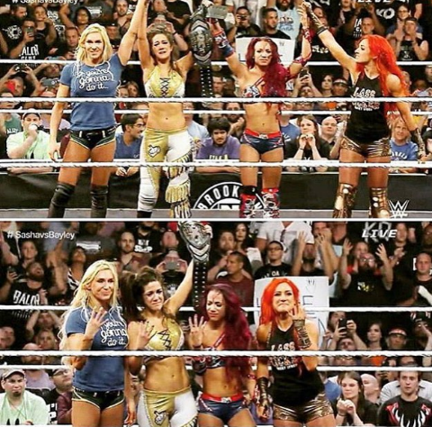

A year ago WWE introduced 3 new women wrestlers into the main roster. They were Sasha Banks, Charlotte, and Becky Lynch. They had spent a couple of years at NXT. NXT is the developmental division that WWE owns to recruit and train wrestlers. While at NXT, these 3 women along with another wrestler named Bayley became known as the 4 horsewomen.
Up until this point, women's matches were getting 3-4 minutes with very little story telling. They were considered the bathroom break matches. But these new NXT women were finally given the chance to learn movesets like the men and they started putting on amazing matches. A year ago, Sasha Banks and Bayley had 2 matches at 2 separate PPVS where they headlined the shows and had the match of the night. Since then, women's wrestling has been elivated and there are more fans than ever.
| Wrestler | Signature Move | Finishing Move |
|---|---|---|
| Sasha Banks | Running Knees | Bank Statement |
| Charlotte | Moonsault | Figure 8 |
| Becky Lynch | Becksploder | Disarm Her |
| Natalya | Dropkick | Sharp Shooter |
| Bayley | Forearm smash | Bayley to Belly |